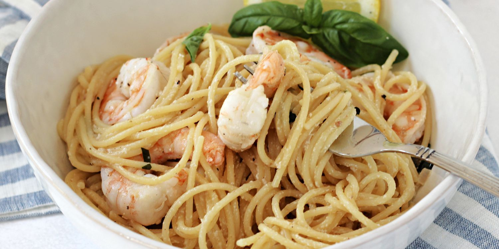

Creamy Lemon Garlic Shrimp Pasta

A deliciously creamy meal that's perfect for busy weeknights!
Creamy lemon shrimp pasta comes with zero downsides. It has all the makings of a flavorful recipe. It’s saucy, bright, and bound to be a crowd-pleaser. And during the spring and summer months, it wins over those craving a lighter meal that still fills your belly.
4 Servings
490 kcal | 51g P | 45g C | 11g F
Ingredients
- 800g Raw Argentinian Shrimp
- 3 minced garlic cloves
- 2 tsp Italian herbs
- 1 tsp chilli flakes
- 1.5 tsp smoked paprika
- 1 tsp salt
- 3/4 lemon juice
- 2-3 tsp olive oil
- 40g light butter (for cooking)
- Fresh parsley
- Extra Lemon Juice
- 250ml low-fat milk
- 120g Light Cream Cheese
- 40g Parmesan
- 25ml Pasta water
- 500g Egg Noodles
- Extra Seasoning (Garlic, paprika, chilli flakes, salt, italian herbs)
Steps
- Season shrimp with fresh garlic, italian herbs, chilli herbs, smoked paprika, salt, lemon juice, and olive oil
- Mix until colour changes
- Cook the shrimps on a pan on medium high heat for 6 minutes, or until they look golden and juicy
- Add light butter, parsley, and lemon juice
- Mix and set the shrimp aside
- Add 250ml of milk, 120g of light cream cheese, and 40g of parmesan, more seasoning, and the pasta water to the pan
- Mix until the mixture thickens
- Add the cooked pasta, shrimp, parsley, lemon, and spinach
- Garnish with parmesan
- Distribute into 4 equal servings and enjoy!
Cooking Notes
- When marinating the shrimp, you can use garlic powder instead and omit olive oil to save calories.
- After shrimp is cooked, lower the heat and add the ingredients in the following step.
- Ensure the heat is low when milk and cream cheese is added. Stir gradually until it thickens, then add the pasta.